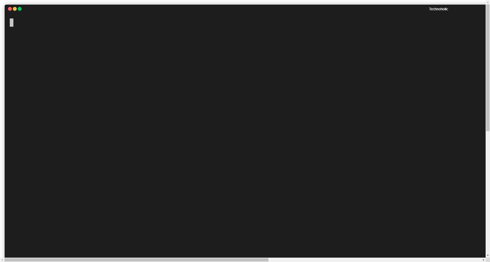

Master any tool with fuzzy search and aliases
Mastering any tool requires learning what that tool does and how we can effectively use it. For example, we know that a simple mechanical tool like a hammer hammers in nails, has to be struck over a nail held in an upright manner until the nail goes in properly. On the other hand, software tools offer a huge variety of commands and options for each command and it becomes difficult to store all those command and options in your brain.
Aliases offer a second brain way to store all those commands in config files and also rename commands with intuitive names. Not all tools offer aliases though. Secondly aliases tend to grow over time and remembering those aliases itself becomes a big hassle. Enter fuzzy search. With these two techniques one can virtually master any tool, let me show you how…
Using aliases
git aliases are a prime example of using aliases for simplifying complex commands.
[alias]
branchSwitch = "!f() { git checkout-branch $1; git pull origin $1; }; f"
commitLast = "log -1 HEAD --stat"
I like to switch branches with a more intuitive switch command. This alias also demonstrates how a git aliases can accept parameters. The second alias for getting the last commit is a life saver since I do not have to remember the details of the log command to extract the last commit. The two aliases also demonstrate a principle I follow while naming aliases for consistency i.e. Name aliases as (RESOURCE)(OPERATION)(OPTIONS). e.g: Kubernetes also follows similar conventions for most of their CLI operations i.e kubectl (operation) (resource) (options).
What if the tool does not offer aliases?
Create a config file in an INI format (key=value) format and parse it via a shell or batch script. In the example below, our configuration file for aliases is stored under XDG_CONFIG_HOME, a useful convention for consistent handling of configuration files. More on that later..
Configuration file (%XDG_CONFIG_HOME%\mytool\config)
branchSwitch = git checkout-branch
commitLast = log -1 HEAD --stat
The caveat to remember is to use an alternate delimiter instead of = if the commands that you alias also contain =.
Handler script
The handler script greps the aliases to find out the command to execute.
@echo on
setlocal enabledelayedexpansion
set MYTOOL_CONFIG_FILE=%XDG_CONFIG_HOME%\mytool\config
set ALIAS=%1
@REM Alias cannot be empty.
if "!ALIAS!"=="" (
echo ERROR: alias cannot be empty.
echo Usage: %~nx0 [alias]
exit /b 1
)
for /f "delims== tokens=1*" %%i in ('type !MYTOOL_CONFIG_FILE! ^| grep -i !ALIAS!') do set COMMAND=%%j
if "!COMMAND!"=="" (
echo ERROR: !ALIAS! not found in configuration.
exit /b 1
)
@REM Do something with the command
There are a few issues here. grep is an exact match search tool. Hence if I type cmtLast instead of commitLast it will not match against my expected alias. An alternative is to use regular expressions - even that is not a convenient option. Enter a fuzzy search tool.
Using a fuzzy search tool to select alias
Using a fuzzy search tool like fzf or peco or others can solve our problem. In the script below, we have replaced grep with fzf, my favourite fuzzy search tool.
@echo off
setlocal enabledelayedexpansion
set MYTOOL_CONFIG_FILE=%XDG_CONFIG_HOME%\mytool\config
for /f "delims== tokens=1*" %%i in ('type !MYTOOL_CONFIG_FILE! ^| fzf') do set COMMAND=%%j
if "!COMMAND!"=="" (
echo No alias was selected.
goto :eof
)
@REM Do something with the command
echo Executing command !COMMAND!
Let us see this script in action. We can select an individual alias using arrow keys or by typing in letters that are a fuzzy match. In the screencast below, I type cmtlast which fuzzily matches the commitLast alias. Job done.

Git has been used as an example above. However, using this combination of aliases and fuzzy search it is easy to learn any tool that has complex commands.
Resources
Tags: productivity, command-line